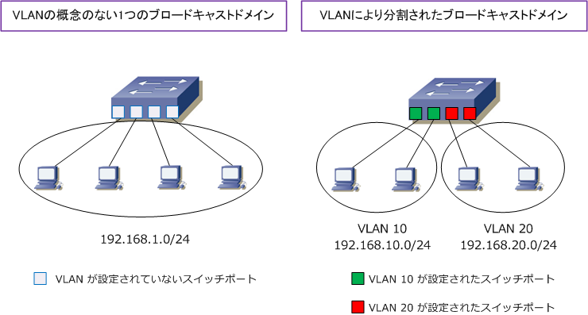
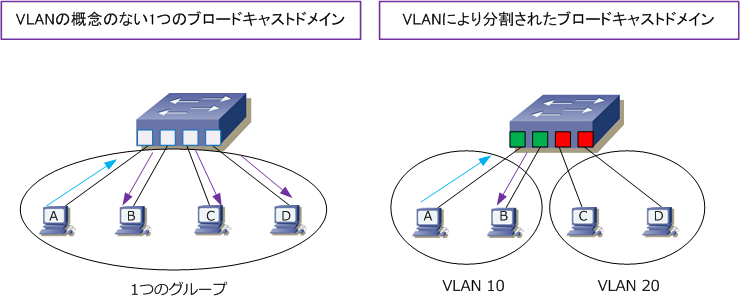
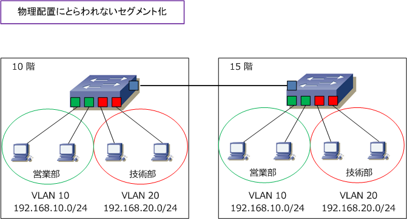
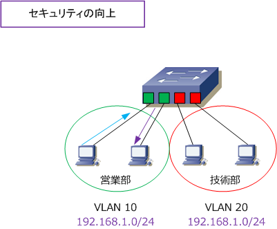
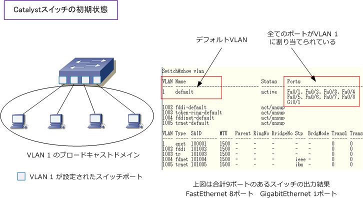
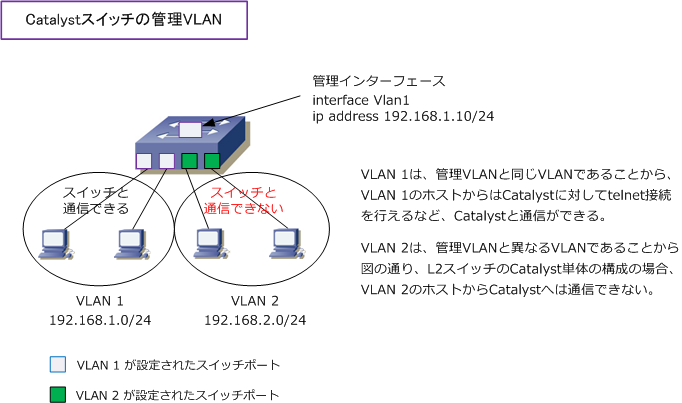
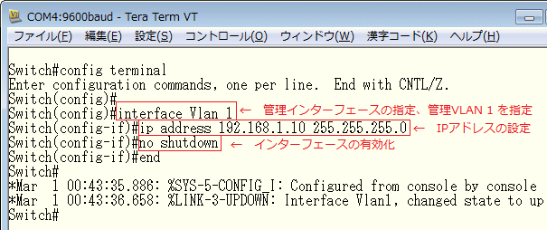

VLAN
VLANとは
VLAN（ Virtual LAN ）とは、物理的な接続形態とは独立して、仮想的なLANセグメントを作る技術です。 VLANはスイッチ内部で論理的にLANセグメントを分割するために使用されます。VLANを使用することで ルータやL3スイッチと同じようにL2スイッチでもブロードキャストドメインの分割を行うことができます。

スイッチのポートにVLANの識別番号となるVLAN IDを設定することで、その番号ごとにブロードキャストドメインを分割できます。
VLANの特徴
1. ブロードキャストドメインの分割 ホストAとBが通信するために、ホストAはARPリクエストをブロードキャストする必要があります。結果、 左下図の通り、そのブロードキャストはホストBだけでなくC、Dも受け取ります。しかし、VLANにより ブロードキャストドメインを分割することで、右下図の通り、ホストAからのブロードキャストはBだけが 受信するようになり、無駄な受信フレームが減ることで、各ホストの無駄なCPU処理などを軽減できます。

2. 物理配置にとらわれないセグメント化 VLANは複数のスイッチにまたがり設定することが可能で、これにより異なるフロアーのスイッチ間の 接続でもブロードキャストを分割できます。下図では、10F営業部からのトラフィックは、15F営業部 だけに転送されて、10F技術部からのトラフィックは15F技術部だけに転送されます。また、部署変更や 部署移動が発生してもスイッチポートに設定したVLAN IDを変更するだけで柔軟にセグメント化が可能。

3. セキュリティの向上 VLANを設定すると同じVLAN IDのポートにのみブロードキャストが転送され、異なるVLAN IDのポートに 転送されません。下図ではVLAN10のスイッチポートに接続したホストとVLAN20に接続したホストに同じ セグメント192.168.1.0/24のIPアドレスを設定しています。しかし、営業部からのPCのブロードキャスト トラフィックは技術部には転送されないので、同じセグメントのIPアドレスでもVLAN IDが異なるので通信 できません。このようにVLAN ID単位でトラフィックを分離することができるのでNWセキュリティが向上。

Cisco Catalystスイッチの用語
1. デフォルトVLANとは
Catalystスイッチは、工場出荷時のデフォルト状態では全てのスイッチポートでVLAN 1が設定されています。 CatalystスイッチのVLAN 1はデフォルトVLANと呼ばれています。各ポートにVLAN 1が設定されていますが 全ポートで同じVLAN IDが割り当てられているため初期状態では1つのブロードキャストドメインとなります。

※ Catalystスイッチでは、VLAN 1 以外にデフォルトで（初期状態で）以下のVLAN IDが作成されています。 ・ VLAN 1002 ・・・ fddi-default ・ VLAN 1003 ・・・ token-ring-default ・ VLAN 1004 ・・・ fddinet-default ・ VLAN 1005 ・・・ trnet-default
2. 管理VLANとは
管理VLANとは、Catalystスイッチを管理するための管理用トラフィックを流すVLANのこと。デフォルトで VLAN 1が管理VLANに設定されています。管理VLAN用に用意された管理インターフェースにIPアドレスを 割り当てることにより、Catalystスイッチに対しtelnetアクセスしたりSNMPにより監視することができます。

スイッチのIPアドレス割り当て設定
(config)# interface vlan vlan-id (config-if)# ip address ip-address subnet-mask (config-if)# no shutdown
| コマンド引数 | 説明 |
|---|---|
| vlan-id | 管理VLANのIDを指定 |
| ip-address | IPアドレスを指定 |
| subnet-mask | サブネットマスクを指定 |
※ 管理VLANはスイッチで１つだけ存在するVLANですが、この管理VLANはVLAN 1から他のVLAN IDに変更することが可能。
